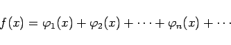
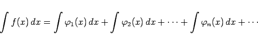
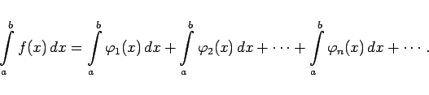
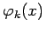
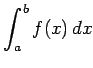
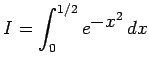
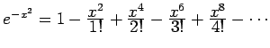
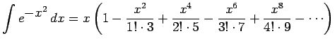

Inhalt Index DeskTop Bronstein

 Integralrechnung Bestimmte Integrale Grundbegriffe, Regeln und Sätze Berechnung bestimmter Integrale
Integralrechnung Bestimmte Integrale Grundbegriffe, Regeln und Sätze Berechnung bestimmter Integrale


Wenn der Integrand f(x) im Integrationsintervall [a,b] in eine gleichmäßig konvergente Reihe
|  | (8.52) |
entwickelt werden kann, dann läßt sich das Integral in der Form
|  | (8.53) |
schreiben. Auf diese Weise kann das bestimmte Integral als konvergente numerische Reihe dargestellt werden:
|  | (8.54) |
Im Falle leicht zu integrierender Funktionen , wenn z.B. f(x) in eine Potenzreihe entwickelt werden kann, die im Intervall [a,b] gleichmäßig konvergiert, kann das Integral  mit beliebiger Genauigkeit berechnet werden.
| Beispiel |
|
Das Integral  ist mit einer Genauigkeit von 0,0001 zu berechnen. Die Reihe  konvergiert gemäß dem Satz von ABEL in jedem beliebigen endlichen Intervall gleichmäßig, so daß  gilt. |